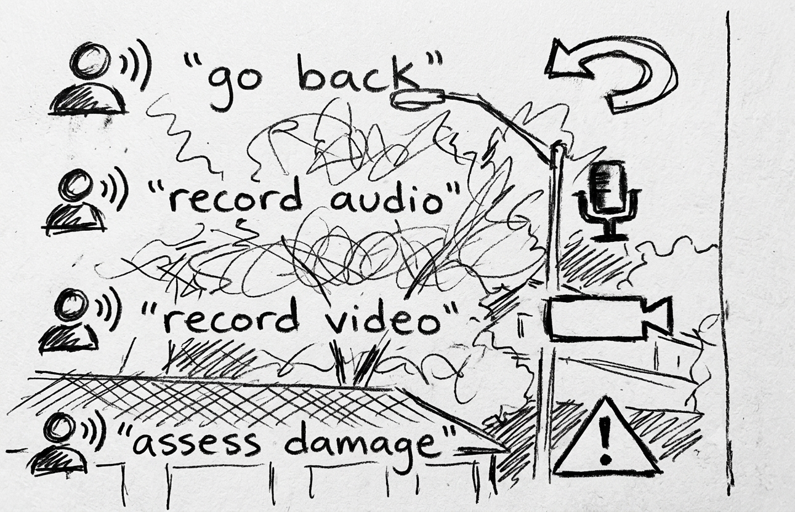
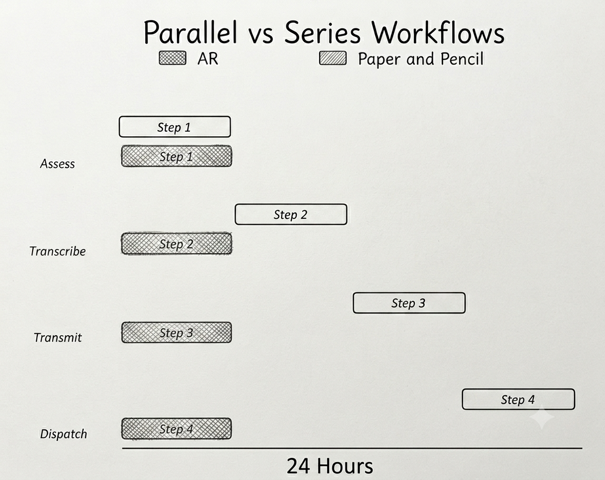
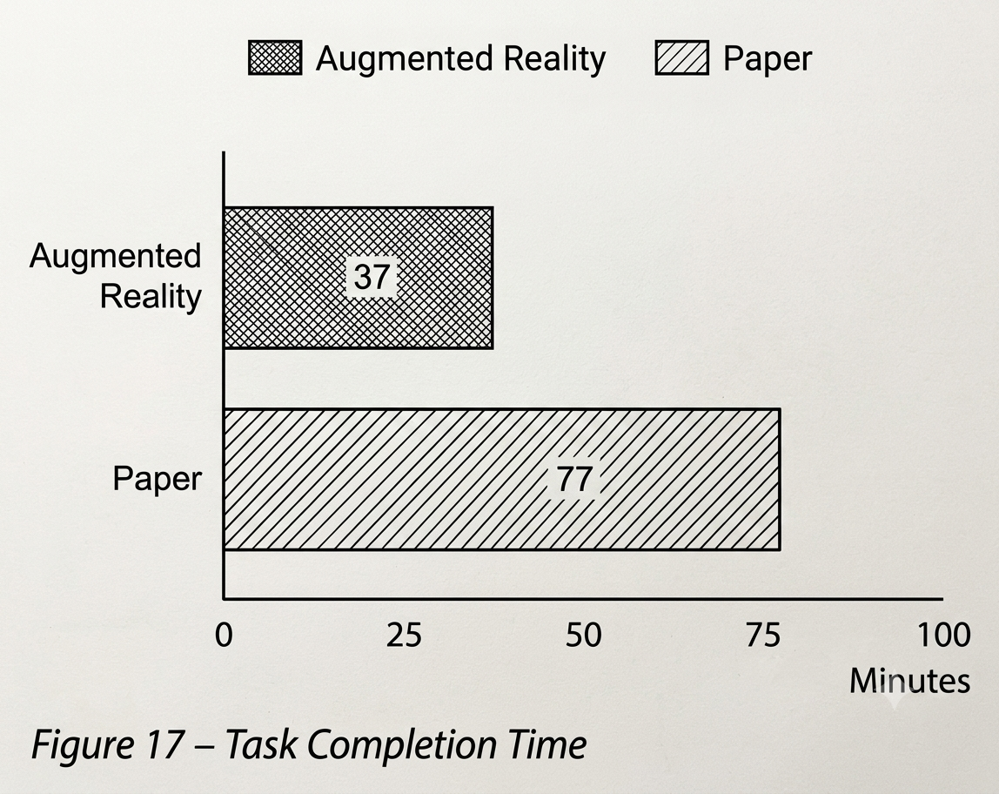
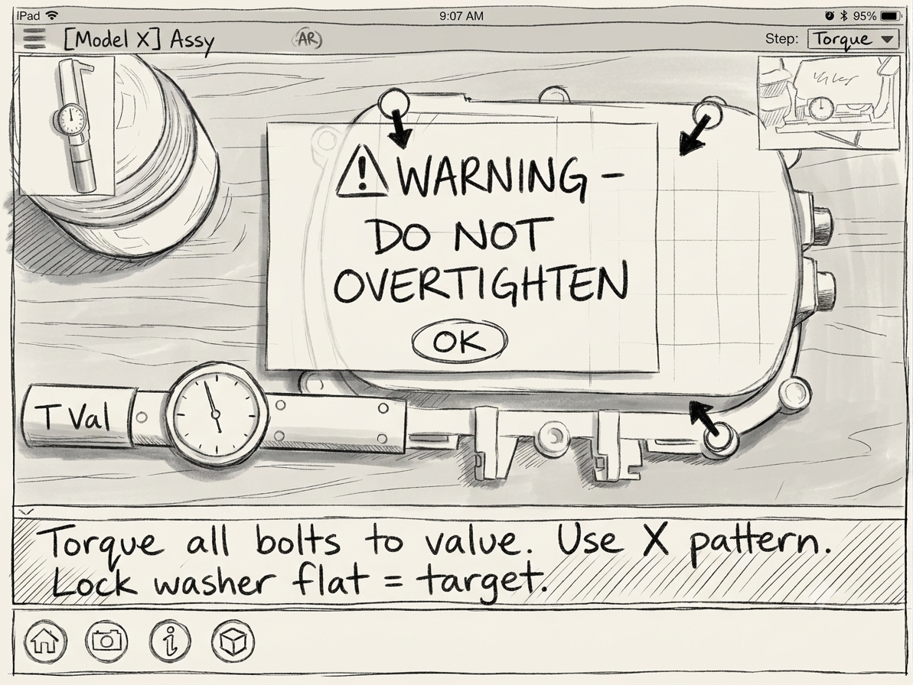
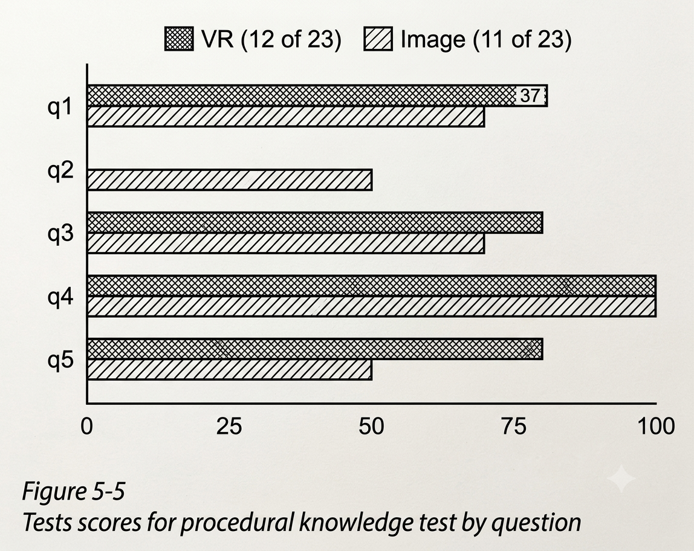
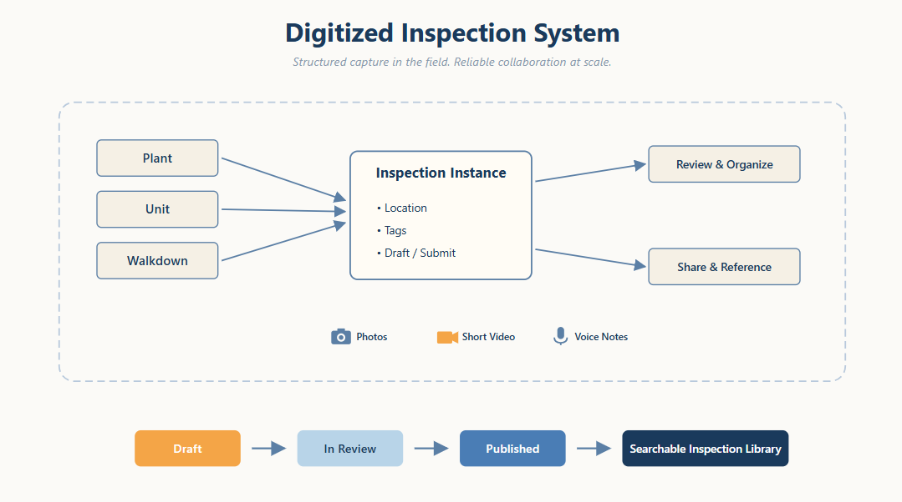
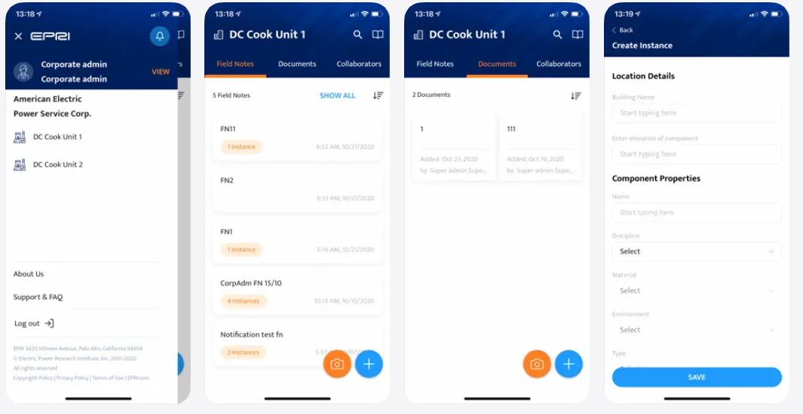

Operational Value Through UX Research
How systematic design interventions transform complex, high-stakes infrastructure environments into intuitive, safe, and scalable product experiences.
Operational UX · Field Research & System Integration
2017: Establishing Foundations
Initial research focused on whether augmented reality (AR) could deliver operational value. Findings revealed that while visualization alone didn't always reduce task duration, integrating head-mounted displays into a networked environment effectively compacted workflows for part procurement and installation.

Storyboard sketch illustrating voice-activated commands for streamlined field documentation.

Comparison chart showing AR enables parallel task completion versus sequential paper workflows.
2018: Procedural Training & Efficiency
Analysis of "just-in-time" mobile training showed that shifting training to the exact moment of need increases worker efficiency. Geo-spatial analysis confirmed that requiring adherence to interface prompts before task completion serves as a critical safety mechanism, reducing equipment damage and subsequent truck rolls.

Task completion metrics demonstrating AR efficiency gains over paper-based methods.

Tablet-based AR interface providing real-time procedural guidance to prevent errors.
2019: Validating Remote Learning
Research evaluated if virtual reality (VR) could support complex learning tasks remotely. Outcomes demonstrated that performance across VR, tablets, and photos was consistent, establishing that remote training is a viable, scalable operational strategy.

Test scores comparing training performance across diverse digital media.
2020: Unified Solutions for Engineering
By synthesizing previous insights, the final tool integrated complex data entry, procedural training, and real-time functionality. Success was measured by creating a secure network that reduced delivery time, improved accuracy, and provided training effectiveness comparable to traditional media.

System integration diagram consolidating field inputs into a centralized, searchable library.

Shipped iOS App.